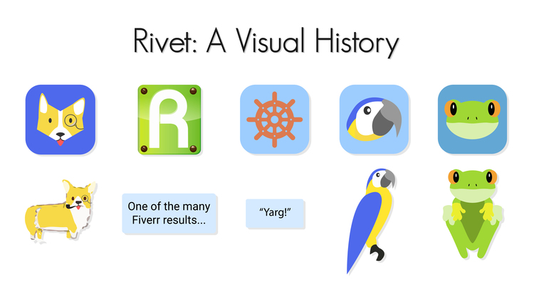
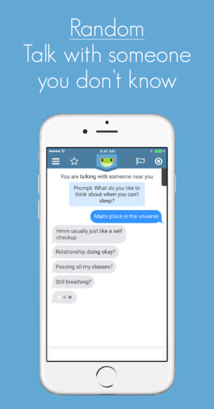

Disclaimer: All of our blog posts were copied from our old Squarespace site. A lot of the formatting was lost in the transition.
Welcome
February 6, 2015
If you are viewing this blog post right now, it probably means you are a friend of Connor, David, Kevin, Kyle, Matt, or I. If that’s the case, we really appreciate the support that we’ve received in the last couple of days. If you do not know one of us, we hope you follow our journey as we progress throughout the stages of developing an app and a company.
The beginning of February marks the early stages of the marketing side of the app, as well as the initial user feedback over the wireframe of the app. As Kyle would say, "it’s time to get down to business." Our Facebook and Twitter pages will start to be more active, as we try to build momentum leading up to our launch date. Also, we are going to try to have a weekly blog post, which will provide a little bit of insight into how the process is coming along. This will be the primary means of communication between us and our "followers". If at any point you have questions or suggestions, feel free to email us at info@icebergsocial.com. We would more than happy to answer anything and everything.
That being said, we are very excited to be working on this project. A lot of time and effort is being dedicated to the eventual success of not only the app, but the company as well. The whole team is new to the process of starting a company, but we are confident in our abilities to create something special.
-Mitch
Week 2
February 13, 2015
Today, Kevin and I were in the middle of our workout when we received an email about the use of ’Iceberg’ as our name. Luckily, our app doesn’t fall within the same market space or target audience as a similarly trademarked product. With assurance from our attorney that we’re in good legal standing, the business aspects for our product have had an eventful kick-off. Also, our Facebook page was temporarily suspended, but we will have it back up and running very soon.
Over the last week, things have been picking up a bit. Kyle started a list of over 140 things that need to be finished before launch. These tasks range from simple programming tasks, to creating a script to be used in a promotional video. Working at our own leisure, this list will be the primary focus for the next six months. If everything gets completed, we should be in good shape for the launch.
This past week has also been very productive in terms of demoing the wireframe to friends and friends of friends. We would like to thank the following people for taking the time to critique the wireframe and to give suggestions on what could be done to improve our user experience: Tami, Gita, Vignesh, Matt, Kevin, Sophia, Scotty, Urmit, Hunter, Lance, Sam, Kelly, Morely, and Alex. Also, a big thank you to Dave, who gave us very valuable information on creating a marketable app, and what it takes to succeed in the mobile app industry.
-Mitch
Week 3
February 20, 2015
This week was definitely an interesting one. As stated in last weeks blog post, we received a cease and desist from a guy who claimed we were infringing on his trademark. Not wanting to start any legal troubles, especially because we weren’t even an established company, we decided to go through a rebranding phase. Up until now, much of the last week was spent trying to come up with creative names for the app to fill the void that "Iceberg" left. We have not came to any definitive conclusions yet, but should be pretty soon.
Not having a name or logo kind of stymied our progress this week. We didn’t demo the app to nearly the same amount of people, and the marketing progress came to a bit of a stand still. Currently, we are in the process of creating a model for how quickly our app will spread, and if we want to target the smaller or bigger schools first. We have made a list of almost 100 target colleges across the U.S., and are trying to figure out how we want to reach out to spread our app at those campuses.
Stay tuned for further updates.
-Mitch
Week 4
February 27, 2015
This week was all about coming up with a new name for the app. The frontrunners for the new names were Stoke and Rivet, with mixed reviews coming from each name. We really like Stoke because of the double entendre associated with it: Stoking a fire to keep it going, like adding "fuel" to a relationship, and to get Stoked, or excited about something. We also like Rivet for the same reason: Rivets hold together two pieces of metal, like a conversation takes two people to hold it together, and for riveting conversations.
During the week, we enjoyed ourselves a little bit more than we should have. One thing that we did accomplish during the week, however, was getting our own attorney. Connor was responsible for contacting several different attorneys in the Atlanta area, and making the decision on which one to roll with. He sent in the letter of engagement and this week we will be writing our operating agreement, which is exciting. The next step after that is to become a Limited Liability Company, which should happen within the next couple of weeks.
-Mitch and Connor
Week 8
March 27, 2015
It is official: we have a name! After a very long and arduous process of trying to come up with a name, we found one that satisfied everyone. There were several different things that we were looking for in a name: easy and fun to say, meaning behind it, two syllables, and not many results when searched for on the App Store. We thought we had that with Iceberg, until we received a cease and desist from a company named PermaGo about a month and a half ago. They claimed we infringed upon their trademark of Iceberg, used for an app they developed for travelers. Long story short, our website and Facebook page got shut down, and we went into a rebranding phase. During this phase, much of the focus was put into coming up with a name. Countless names were being thrown around every day and night, but nothing really stuck. That was, until, the name Rivet came up. It fit everything we were looking for in a name. We sat on Rivet for awhile until it was time to make it final. On Tuesday of this week, we had a company vote, in which it was a unanimous decision: we would call our company Rivet, LLC. and our app would be called Rivet.
Other than coming up with a name, a few major things have happened in the last four weeks, or at least since the last blog post. First, we submitted our paperwork to the Georgia State Department to create our Limited Liability Corporation. At one of our business meetings, we sat down and completed a 19 page questionnaire regarding our company; everything except our name. Questions included members of the company, percentage stake in the company, and other vital information necessary to move forward with creating the company. After deciding on the name on Tuesday, the questionnaire was finally completed, and sent in to the attorney’s office the next day. We are still awaiting a response indicating that the request went through.
We also have an alpha version of our app, which is very exciting. Kevin and Matt actually went to a local mall during spring break to get feedback from some strangers. Even without a name and logo, the feedback was very positive. Everyone seemed to like the idea. In the next couple of weeks, we plan on getting our alpha version on more phones to test the scalability. Kyle and David have really been working on the server side of the app, but it’s tough to know exactly how the server works without actually testing it out.
The weekly blog post will return, so be on the lookout for one every Friday! With five months until launch day, there will hopefully be some exciting advancements and announcements in the upcoming weeks. We look forward to sharing our progress with everyone.
-Mitch
Week 9
April 3, 2015
Over the last week, the only thing that has really changed has been the app itself. Kyle has said that development is going "very well". We hope to have the beta version of our app finished soon, from which we expect to get some data about the scalability. Kevin is heading the design of the logo, which is a very slow and tedious process. Some of us have submitted requests to Fiverr, a crowd sourcing design website, to create a logo. Fiverr allows us to get some outside feedback and ideas. After getting those requests back, we should have a better idea of where we want the logo to progress to.
-Mitch
Week 10
April 10, 2015
There were some big developments that happened this week. First, we are proud to announce that we have officially been registered as a Limited Liability Company (LLC) in the state of Georgia. We also received our initial Operating Agreement from our attorney. After we review and sign the document, formal business procedures will be put into place, including "units" of ownership, voting practices, etc. As you can imagine, this was a very exciting step for us. All of us are now co-owners and co-founders of a company! With that being said, we still have a lot of work to do in order to prepare us for our launch. Logo designs are still being worked on. When all of our Fiverr requests come back, I will put them up on our Facebook page to get some outside opinions, so be on the lookout for those.
-Mitch
Week 11
April 17, 2015
This week was "Hell Week" for those of us that are still in school, which means everyone was pretty busy with exams, projects, papers, etc. Throughout the week, we did manage to complete some important things though. One of those being completing and signing the Operating Agreement. On the Operating Agreement, there was an article about electing officers, so we held a vote the other night to get those positions filled. Connor was named the President, which makes him in charge of taking care of all of the business items, and making sure the company goes in the right direction, following the business plan and abiding to all legislation and regulations. I was named the Treasurer, which means I am responsible for all monetary items, including keeping track of expenses, receipts, opening a company bank account, and other things of that nature. Kyle was named the Secretary, which means he is responsible for keeping minutes at our weekly meetings, and he has custody and attest of the company seal. We have also been thinking about ways to make our app better. We have gotten some negative feedback about some aspects of our app, so we have been brainstorming ways to make it better for the user. With the changes, however, the beta version will not be available for a little bit longer than we were expecting. Like always, I will keep you updated with the progress and updates from the company!
-Mitch
Updates
May 5, 2015
First off, I would like to apologize for the lack of updates recently. Dead weak and finals week were very busy, and a lot of focus had to be put onto school work. Now that the semester has ended, we have a lot of work to do before the fall launch. This week, all of us are staying at David’s apartment to get a head start on projects that need to be completed over the summer. A lot of our time has already been spent on how we want to brand our app. Hopefully by the end of this week we get a solid grasp on where we want to go with the branding. Also, the app should be ready for its first round of beta testing by Friday, May 8th, so we look forward to that. Kyle is leaving the country next week, so getting a bunch of feedback while he is gone will be important. Another post will come on Friday with updates from the progress that we made during the week!
-Mitch
Week 14
May 8, 2015
So far, it has been a very productive week. Although some of us have been in and out due to work, we have still managed to reach most of the goals that we set at the beginning of the week. Probably the most important thing we have accomplished has been creating and agreeing on a central theme to have the app revolve around. We have toyed around with a nautical theme and think there are some pretty cool things we can incorporate into the app. The main thing that we are still trying to decide is what we want our identifying feature to be. When you think of most social media apps, an image usually pops into your head. We are still unsure what we want our image to be. As of right now, we are kind of leaning towards a parrot, but haven’t came to any definitive conclusions. We are also still discussing what to do with the name "Rivet". A lot of us feel like there is a better, more suitable name for a nautical theme than Rivet. We don’t really like the idea of having to change the name, but if it’s best for the business/app, it will need to be done. As for the beta version, I don’t think it will be finished today. Kyle will be working on it for the next couple of days, and will have something ready before he leaves. There have been a lot of changes to the design and user interface this week, so making those changes has taken a bit longer than expected. Even if the beta version doesn’t include much of our final theme, we still feel like it will be important to get something out there to start getting feedback on what can be improved.
-Mitch
Week 15
May 15, 2015
This week marked the beginning of our beta testing. We sent out download invitations to about 40 friends, with about 20 actually going through with the download. At first, we were just focused on the app functioning correctly and getting general feedback, but towards the end of the week we tailored the feedback to specific features, including the private messaging slider and the hashtags. While it was exciting to see other people using the app for the first time, it also came with a bit of a downside. There were many bugs that appeared throughout this testing phase, so the next couple of weeks will be spent trying to iron those out. Kyle returns to the States next week, so we’re hoping he can get to work fixing those bugs as well as starting on the Android version. Also, we received some questions as to why we chose a parrot as a logo. If we decide to stick with the parrot, hopefully this will become apparent in the next version of the app when the nautical theme is incorporated. Kevin has been designing a mockup that focuses on a frog being the main image for the app, so that will soon be passed around to get initial feedback.
-Mitch
Week 18
June 5, 2015
It has been three weeks since the last blog post, and for that, I apologize. Anyway, there are a couple of updates on which we would like to inform you guys. Firstly, we have decided to go with the frog as the logo and the general theme of the app. We’re still trying to set the color scheme of the app, so it’s a possibility that the frog might be changing colors. Secondly, we are actively discussing the budget and deciding what kind of "SWAG" we want to give out to promote the app. If anyone has any suggestions, or knows of anyone that specializes in custom made products, please let us know! At the moment, we’re thinking T-shirts, sunglasses, bottle openers, stickers, and bottles of water, but that list could change at any time. Thirdly, the next update of the app will be out very soon. We’re still adding some finishing touches on push notifications, and then it will be released for review on the App Store.
-Mitch
Week 19
June 12, 2015
This week, we released our third beta version to our testers. Changes made in this version include push notifications, a revamped prompts list, changes to titling conversations, and making the sliding bar green. With this round of testing, we’re hoping to put more stress on the server by having more "testing windows". With that being said, we are also going to invite more people to become beta testers. If you have access to an iOS device and want to check out the app and give us some feedback, contact one our team members and we’d be happy to send you an invite. Another thing we’ve been working on this week is coming up with a Kickstarter campaign. If you aren’t familiar with Kickstarter, it is a crowd-funding website where people can donate to an idea or product to help it come to fruition. We’re still deciding upon the specifics, but we’re hoping to create a campaign to spread awareness, and also to fundraise a little. We’ve started going over some budgets for the "Swag" we want to order as well as server costs when we launch, and decided that getting more funds would be very helpful.
-Mitch
Week 20
June 19, 2015
This week, we had some a couple big events happen. First, our third beta was released. Not only was it released, but we also got around 30 people to download it, which we think is a pretty good number. Testing has gone very well so far. We’ve received a lot of positive feedback about the app, which is very encouraging. We should be sending out another Google Forms page asking our testers for feedback sometime in the near future, so if you are testing, be on the lookout for that. Again, if you aren’t testing and would like to be, shoot us an email at info@jumpintorivet.com and we’d be happy to send you an invite. If you’re an Android user, good news. Another big event that happened this week was the first Android version was released. As of right now, we’re just keeping it within the team so we can find as many bugs as possible before releasing it to you guys. We look forward to sharing it with everyone when it is ready!
-Mitch
Week 23
July 10, 2015
It has been way too long since the last blog post, so this one will be filled with all kinds of information. The last three weeks have been very busy, with most of our time being spent working on the Kickstarter campaign. From nailing down the prize levels, to settling upon the goal, it took a lot of time and effort. Not to mention shooting and editing the video. It seemed to turn out alright though! As of right now, we are at about 2/3 of our goal with two weeks left. This is a pretty good pace and we’re excited to see what happens in the next two weeks. A big thank you goes out to everyone that has helped out with the Kickstarter, whether it was donating or sharing the page.
Just in case you missed it: Here’s the blooper reel for the Kickstarter video we made!
As for development, we have made a couple design changes, as you can see by the color change. We’ve decided to move away from that bright green color to a much more aesthetically pleasing blue color. The changes will be seen in the next update for the beta version. The Android version is also coming along very nicely. Kyle said he only has a couple small things to add, and then it will be time to clean it up and make it more polished. When the Android version is available for beta testing, you will be sure to hear about it.
-Mitch
Episode 1: An App Of Fire And Ice
July 21, 2015
Hey crew! I wanted to welcome you to a new series for our weekly updates. It doesn’t quite have an official name yet, but it will breakdown particular milestones of our journey into a little more detail. The weekly updates are (and always have been) designed to be a window on the process and people here at Rivet. We want a lot of people to read and enjoy the updates and they’re here for folks who’re curious about the process, not so much the product. Nearer the app’s release, there will be fountains of really gritty Rivet stuff, but until then, the Rivet Weekly Updates will continue in the vein they have been.
(Hold on to your pants: This update is going to be a bit beefier than usual.)
A Design History Log:
In this post, we experience some of the joys of parenthood: Naming your creation. We once read an article saying naming usually takes at least 6 months and we scoffed at the idea: "How hard could it actually be?"
Ohhh, how wrong we were...
Our next design post will be focused more on how we designed the actual art and theme for our app.
And in case there are any of you bums that haven’t seen this yet:
From the dark depths of room 519 came the beginnings of our app. It crawled out from the muck and it needed a name. So we gave it "Fire." As with most creations, you don’t really know what to call them at first. Our first choice in name came about from the thought: "We want the app to spread like fire." It’s almost the equivalent of naming your child "Jesus" (pronounced: /hey-zeus/, of course). "Surely it will live up to it’s name!"
When considering a name, your next move is to dive into the series of tubes that comprise the internets and begin researching it’s availability. For us, the most important factors in availability were the number of App Store results and similar apps with similar names. An existing app called FireChat soon bubbled to the surface. Seeing as how it had several thousand downloads and was already well established in the realm of messaging apps (particularly in China), we decided to begin brainstorming names in earnest.
You quickly become Goldilocks in an empty bear house of potential names. "That name is too long." "That name is too cold." etc. Lists upon lists of potential names are made based on length, phonetics, meaning, and anything you could potentially imagine and you sit there with your team trying to find the one that’s "just right." We wanted to avoid having our app get beaten up in the locker room. We wanted our app to be the coolest kid on the playground and it all hinged on a short two-syllable name with a depth of meaning to our purpose.
After every brainstorming method Google-able, we came up with our next name: Iceberg.
Then there was Iceberg...
"Dive in." "There’s more beneath the surface." "Explore your community."
These were some of the ideas bouncing around our head as we fleshed out the concept. "Run into something good" was not as well received as a candidate for potential branding. On occasion you want to make polarizing creations; things you either love or you hate. If not, you just get a lot of "meh, sounds good." But this wasn’t one of those occasions where something polarizing won out. It was deemed "too soon," or whatever the heck that’s supposed to mean...
As ironic as it was, we too were doomed to the same fate as the Titanic: We eventually ran into another Iceberg (Or another Iceberg ran into us. It’s all relative). Luckily it happened prior to our maiden voyage and with plenty of time to rebrand; A silver lining. The last thing you want is to have to rename your product after you’ve launched and built up following and brand recognition.
A bit more brainstorming, digging through archived names, and we finally found a prince among toads: Rivet.
Rivets, and parrots, and frogs! Oh my!
We started developing the art and the branding for Rivet. It wasn’t as straightforward as Fire or Iceberg, unfortunately. Sure rivets are real tangible objects too, but dear God, man: They’re just fancy nails. Hardware equipment used to hold things together, ironically, is hardly the most "riveting" imagery you could use for a fun social app. We played around with using a parrot for our branding. Mostly, this is a result of what happens when you say "Rivet" in pirate voices for way too long. On top of our difficulty with imagery, we soon ran into another problem.
"DID YOU SAY ’RIBBIT’?"
Two syllables: Check. Short and sweet: Check. Phonetically distinct and clear: Questionable.
When told the name of our app, a surprising amount of people would initially hear ’ribbit’ no matter how clearly we tried to articulate it.
It was a blessing in disguise that would solve our branding. We initially tried to fight back the confusion, but eventually decided to embrace the fact that the confusion would likely continue to occur. It was just one of those things that’s better for you to just accept and run with.
With a kiss, our metaphoric frog-prince(ess) turned into a... smirking tree frog.
And they lived happily ever after.
The End
P.S.- Thanks to everyone who helped us through our process and gave us feedback on our names and designs. Especially Scotty during Iceberg and Gita for pretty much all of it.
P.P.S.- Don’t forget to check out our next post were we share some actual resources that went into designing the art, look, and feel of our various brands.
Episode 2: Kickstarting
July 26, 2015
Welcome to Episode 2 of our special series!
While we can’t claim to be experts at all in getting ourselves funded, we’ve definitely bootstraped well enough so far. We are writing this post for those curious about how to get themselves even just a little bit more funding. Even better than the funding we received from all our backers (Thanks everyone!) was the advertising and awareness that we were able to build up.
We know that our target market is poor college students, so we didn’t really expect many of our peers to donate to our project (The average age for Kickstarter backers is 42). What we really wanted was for people to know our product existed and to share it with their friends.
Anyway, back to the subject...
Let’s say you’re a young developer looking to get his (or her) app funded as well (Hey Jeff!). You might ask:
"How did you gain traction and pick up backers? Did you have specific methods that you used? Or did you post it and the backers come on their own? If my idea is good enough, will backers come on their own, or should I do some marketing?"
First off, there was a lot of preparation that went into building the Kickstarter. We followed the advice on this link as best as we could. It was incredibly more helpful than any of the other advice we had come across.
An abbreviated version:
1. Story: What’s your story? Craft and tell the story of your story.
◦And make a video of it. You absolutely NEED a video.
2. Make an extensive list of all your potential fans and evangelists.
◦Personally reach out to each of them and give them a heads up that you are about to launch a Kickstarter
◦Build a following ahead of time and start posting on Facebook, Twitter, etc.
3. Set up great rewards for backers
◦$25, $50 and $100 are statistically the biggest sellers but under $10 will help it go viral and provides a way for anyone (read ’starving student’) to get involved. I generally think less is more on the rewards, but there are differing opinions. Get creative, and try and offer something valuable at each price point.
◦Try not to ship anything below $25
4. Don’t make it more than 35 days and constantly be updating and refreshing your page to keep people interested.
Before I get into more of what we did exactly, I just wanted to share something that I found to be absolutely true in that article. It is something that applied at every step of the process:
NOT a Field of Dreams
"If you’re uncomfortable reaching out to friends, family and strangers about your project and about asking them for their financial and social media support, then crowdfunding isn’t for you.
Actually, what this becomes is a great litmus test for how committed you are to your project. You may feel reservations about reaching out regarding your needs - but your passion for completing your work will overcome any intimidation to network.
We did not stop at crafting our story, making a video, and just slapping it up there. We made an Excel sheet with all our respective contacts that ranged from people we thought might share, people that might donate, to people who might end up doing all that and more for the project. Each day after launching our Kickstarter was spent calling, texting, and Facebooking everyone we could on that list. We also shared it to Facebook pages and groups that included our target audience.
The next part that really helped us out was updating the Kickstarter page. We ended up doing this at least once a week. Each time we did, we got huge spikes in donations. This was largely due to people backing and sharing the project that had forgotten to the first time they came across it:
The two biggest spikes aside from our initial launch were after we put together a Blooper Reel and after we started reaching out and putting together our new Blog Series.
Bonus! (Two truths and a lie)
That pretty much covers all we have to say about creating our Kickstarter campaign. Now I thought I would reward the dedicated readers who have made it down this far into the article with some bonus ideas on how to get their creations funded. We’ll play two truths and a lie for this one. See if you can figure out which two methods we actually used to make money.
1. Topps Star Wars Online Trading Cards
"What the bloody hell is that?" you might ask. Well I’ll tell you: It’s a magical way to make money appear out of thin air. It’s just about as ridiculous as rubbing pennies together. You get points for opening the app each day, you spend the points on digital cards, and then you sell those cards on ebay! In a month, we made more than $350 over the course of a total of three hours.
2. Amateur Landscaping
We forgot to take a before picture, but hopefully the finished product speaks for itself: (There was also front yard. 16 yrds of mulch later and...)
3. Sell lemonade at the street corner
We told the neighborhood kids we’d give them $5 to sell lemonade for us.
($5 between the four of them, not each.)
#Funding!
PSA: For Freshman
July 29, 2015
Today’s post will be a fun and short public service announcement (PSA). It’ll diverge a bit from our usual content. Enjoy:
Make friends and play
This post will be for all those freshman out there looking to make some new friends at college. College is a whole new world; a whole new environment full of all sorts of new people. Want to have someone to sit next to at the dining hall? You’ll need some friends
Trying to join that club, fraternity, or sorority you’ve always wanted to be in? You’ll need some friends.
Trying to make some friends? Take a cue from Andrew Hales:
(Pro Tip: Click the pictures)
1. When you meet someone in the hall, don’t just give them the standard handshake or high-five. Change it up a bit. Make things interesting:
2. Here’s a pro-move for making friends. Super effective at places like the library or the dining hall:
Now that you’ve soaked in all of Andrew’s pro tips on being socially adept. You can also try using more of his tips while using Rivet.
What can you use Rivet for?
A conversation app, you say? Who do I talk to? What could I do with it?
First off, you can message anyone and everyone around you that also has the app. Since Rivet is all about meeting people, we’re going to have Andrew Hales demonstrate different ways you could interact with people you meet in your life.
Now lets say you’re in a conversation on Rivet. What next? Really, you could use Rivet to talk about whatever you want to, but here are some ideas for the less creative:
Today’s tale is one of Riveting proportions. Long past are the days of Fire and Ice. As we journeyed through the land of design and branding, we sought to find ourselves a champion. We needed something to better capture and spread the feeling of our app better than the inanimate objects of our past. We could get icons and an image out of ’Fire’ and an ’Iceberg," but could we do better?
Swish and flick...
With a wave of our anthropomorphic wands we could slap a face and limbs onto anything we wanted to. But remember, as wise old Uncle Ben cautions:
Clippy may leave a sour taste in your creative mouth (which it should). But don’t let that twisted piece of metal dissuade you from a great branding opportunity. The article below (Hint: Click the picture) is a great piece on the creation of a mascot.
Click Me^^^
"With Roger, I really wanted to create was something that would almost make you feel bad when you thought about leaving." -Derric Wise
It was a bit of a process to decide on creating our own champion. Mascots are not for everyone. But if you think about it, even companies like Nike, Coke, and Apple use celebrities as a mascot of sorts. It doesn’t have to be some cute cereal-box-type creature or Pixar production, but you gotta have something fit that sort of role.
We picked a name, but didn’t have any imagery to build a brand around it yet. Here is a short summary of our own journey to do that:

1. Perhaps "Riveting" in the British sense? Welsh Corgis?! Monocles?
◦Too childish. It looked like an app made for Cartoon Network
2. Hmmm. Maybe Fiverr requests will produce something that can be branded without needing a mascot; maybe something using an actual rivet.
◦The guy didn’t even use rivets though... He used screws...
3. "Yarggg! Yer’ conversation be Riveting!" Pirates--> Sailing--> Steering wheel.
4. Ok, fine. SEOmoz (Just in case you missed the link earlier) may have had the right idea with Roger. Let’s go with a Parrot!
5. "Did you say ’Ribbit’? Why don’t you just go with a frog?"- Rahul Panicker
◦We liked the Parrot, but we kept getting suggestions to go with a frog instead because ’Rivet’ sounds like ’Ribbit.’
Our new frog may be the cute mascot that pulls you in and makes you feel too bad to leave, but it’s still really about you guys. The app is simply supposed to be a platform to host a community.
Threadless
This post is about forming a brand. And that is more than just colors, mascots, and consistent design elements. All of those things are just ornamental macaroni pieces glued to a kindergarten ’Happy Mother’s Day’ card. The real meat of the branding is the part where the macaroni spells "I love you, mom!" It’s the part where you’re actually paying attention to what it’s all for.
To explain this, I’m going to share one of my favorite things in the world with you: Threadless! How does a T-shirt company tie into all of this? Very darn well. Threadless is a magical company that inadvertently created something magical by focusing on creating a fun little neighborhood of sorts. I say "neighborhood" because I’m tired of using the buzzword "community."
Their focus wasn’t to sell poot loads of things and make oodles of money (although that was a certain byproduct). Their focus was facilitating great art! To do all that, their macaroni noodles spell this:
"You are Threadless. You make the ideas, you pick what we sell, you’re why we exist."
The full breakdown (and tons of art) are packed away in the book below. We used this as a bit of a guide:
OUR VERSION
Translating Threadless to the type of neighborhood we are trying to create, this is what you get:
Exploring the conversations of other participants, creating your own content, and sharing all of that with others are all actions that are engaging and build a community.
Every person adds their own unique perspective to the collective story.
We want people to become more than “users” in the community. They should become fans and evangelists
"You are Rivet. You create the conversations, you pick what’s entertaining, you are why we exist."
Names, aesthetics, and mascots are fun. Just don’t forget that’s only the surface.
Jump in.
PS- Shout out again to Rahul Panicker for giving us feedback and a strong push to go with a frog.
PSA: Your Freshman Year
August 5, 2015
Freshman year of college:
A lot can happen in the span of a year.
It’s hard to say what will or won’t happen, but most of that is up to you. We scoured the internet and the depths of our memories to compile a short list of thoughts to take into your freshman year. This list is truly a dense collection of sage wisdom that may even warrant being inscribed on a stone tablet or two. (Number 5 will shock you! ...jk.) But before that, a video. Enjoy:
Dorm Life:
Since I know videos are a whole lot more entertaining than reading, here is a mockumentary glimpse into the future. It’s like The Office version of your freshman year: (And NO! This is not some shmuck Buzzfeed video... This thing has an 8.9 on IMDB, for what it’s worth.)
They say Scrubs is a surprisingly accurate representation of hospitals. I say Dorm Life is a surprisingly accurate representation of every freshman year I have ever witnessed (you see a lot as a RA for freshman).
Sage Advice:
1. Open doors make happy floors. Get to know your hallmates. The friends you make your freshman year will be the friends that last all through college and after.
2. "It’s not what you know, it’s who you know." - Alex Hanson
3. A romantic relationship is not a waste of time. Even if you’re the busiest, most ambitious person in the world, it’ll be good for you across the board.
4. But long distance IS a waste. You’ll spend all that time Skyping, going home on the weekends, and wind up realizing you wasted a huge chunk of your freshman experience when one of you suddenly decides that you need to “explore and find yourself.”
5. Your parents love and miss you. They’ve cared for you for 18 years. Indulge them with a call from time to time. It’s not lame.
6. Ask for forgiveness, not for permission. Ask for forgiveness more often than for permission.
7. If you’re faced with a choice between locking yourself up and studying for an exam or doing something much more epic and memorable, choose epic. (Take a note from Nike: Just do it.)
8. Don’t miss your classes because of sleeping in, but nap religiously in the middle of the day. In general, get sleep. You’ll feel better, and you’ll do better.
9. Watch out for the for the “Freshman 15.” If it’s not from the beer and liquor (which is not to be taken in that order and certainly NOT while under the age of 21), it’ll easily be from the buffet of pizza and burgers at the dining hall.
10. Laundry is like studying. It’s a lot easier in smaller, more frequent loads. (Or it’s something you procrastinate doing until the last possible moment.)
Bonus: Don’t be complacent but have fun and be happy. Be thankful for where you are. Everything is already pretty great.
#College
Family Outings: Taking A Break
August 12, 2015
Fast and Furious
This is a short one. I’m tired, but I still wanted to make a post. The compromise: a bunch of pictures instead of words. Enjoy:
It’s important to spend time with your family. In this case, we mean in a Fast and Furious kind of way (the biological kind is also important, so spend time with that family too).
Launch day is rounding the corner and we decided to bring it all in with some good old team bonding. We halted work for the day to go hiking out in Kennesaw, take a Chipotle pit-stop, and enjoy the shiny new apartments that most of the team just moved into. For your enjoyment, we took pictures.
These are worth a thousand words:
#Fun
Episode 4: Wireframing An App
August 16, 2015
A Design History Log:
Paper, Paint, and Illustrator
This post will cover the wireframing process and the different tools we used to accomplish this task.
As Steven Covey says, "Begin with the end in mind."
Taking that to heart, we decided to save our beloved coders, Kyle and David, some pain and heartache by setting out a clear design path for what they were actually going to be creating.
These are two of the better wireframing tools that we came across Balsamiq is simpler and will provide a rough sketch for the overall function, but not so much on the aesthetic Justinmind, by contrast, is very similar to Adobe Illustrator and offers a wide array of tools that allow you to create a detailed mockup that can potentially look like a finished product.
I would recommend using this over Illustrator ONLY if you are outsourcing your coding to someone else and need an extremely explicit description of the layout and function.
In all other cases, Illustrator is easier and more useful
(More on that in a bit)
Paper covers rock
But remember, even though there are several fancy and shiny tools out there for you to use, the easiest thing to do first is just sketch it out. It doesn’t matter if your drawing look like a kindergarten doodle. It’ll usually be a hell of a lot faster than learning a whole new program.
Watching Paint dry
Ahhh. Yes. I remember the days of Microsoft Paint.
(Yes. The humble beginnings of our app were, in fact, created using this sad excuse for a designing tool.)
Our "minimalist" tendencies momentarily bled over into our designing software. Too poor to pay for a proper wireframing tool like Balsamiq, we were momentarily stuck with the sticks and stones of Paint.
In case you are unaware of the reality of this struggle, here’s a quick breakdown: Using Paint is slow goings (Consider the phrase "watching paint dry"). Taking the time to edit each of the god-forsaken pixels with the limited tools is as meticulous as eating dry rice with chopsticks: Each. Grain. Of. Rice. One at a time.
And on that note, don’t use Photoshop either (Also pixels).
One day, it finally happened: We started using Illustrator.
"Watch the video!" -Kevin
There is a story of a disgruntled designer berating teammates about wasting time by not watching a certain tutorial, but that’s a story for another time.
The sheer number of options and tools in comparison to Paint is enough to make your head spin. Watch some Youtube tutorials, however, and I guarantee it will be as if our eyes have been opened to the world and limitless powers of creation placed at our fingertips.
Ok. An exaggeration, perhaps. But check this guy’s videos out and you’ll see what I mean:
There’s not a whole lot more I have to say in the way of wireframing. For the sake of our readership not being too bored to butts by the end of this post, I’m just going to let you contact us if you want anymore details.
Fin.
It’s Almost Here!
August 18, 2015
Good news, everyone!
Launch is quickly approaching! After about a baby’s worth of preparation and care (nine months), Rivet will be released to the world.
Starting on Sunday, four important things will happen. One, Rivet will come out. Two, the former weekly updates will become something quite different. But still weekly. Three, there will be a lot of interesting stuff on the app that might even distract you from reading the updates.
And four, we will be celebrating with some fro-yo!
Yogli Mogli
Let’s get to the important stuff: Frozen Yogurt. We’re kicking off our launch with a "Lunch Party" at Yogli Mogli.
This Sunday, you can finally download the app! Come to the Yogli Mogli at Tech Square starting at noon and you’ll get a $3 discount when you show the cashier the app on your phone. It’s only for the first 100 students that show up. But don’t worry: Everyone after that will still get 20% off!
Come over and enjoy your Sunday with us! There will also be some cornhole and just good old-fashioned hanging out.
Download Rivet this Sunday!
Jump in.
Explore your pond.
Download Now!
August 23, 2015
It’s Time to Fly
Rivet is like a peacock: It’s gotta fly. Of course, that reference won’t really make any sense unless you’ve seen The Other Guys with Mark Wahlberg and Will Ferrell.
Anyway, lets get to the point. We put the app together, but Rivet is yours now. It will be what you make of it. Think of it like the playground. You could have fun and play tag or red-rover. Or you could be a jerk and kick sand in people’s eyes. DON’T be a jerk: No one likes sand in their eyes.
We could go into a whole spiel about the warm fuzziness of community, but since we’re sure you get it already we’ll spare you the buzzwords and just let you have fun. Rivet will be driven by your conversations, your prompts, and your votes.
Jump in. Explore your pond.
PS- We seriously can’t describe how excited we are to finally have everyone on the app with us! Download it, yo!
The One-Comma Club!
August 26, 2015
Guess what?!
It’s been about three days since we’ve launched and sometime last night we reached a bit of a personal milestone:
1,000+ Downloads!
We’re over 1,000 and counting! That said: we wanted to take the time to thank everyone for their support so far. The Yogli Mogli event was a hit and we’ve had a ton of fun giving out swag and talking to people around campus. It wouldn’t have been as amazingly fun, though, without all the positive feedback from everyone we’ve hung out with so far.
One of the best parts of launch so far has probably been watching our pride-and-joy grow on it’s own. We’ve walked around campus and noticed on several occasions that people all around us were using the app!
After the first day, people were already having fantastic conversations and experiences on the app. The best part was seeing all this great content, looking up at each other, and then suddenly realizing no one on the team was in that conversation we just read.
As the Rivet train rolls on in the next few days, keep an eye out for a collection of our favorite content so far! We’ll also be looking for campus reps soon to help us spread the word around Tech and other campuses. If that seems like something you’d be interested, email us and let us know!
#OneCommaClub
New Update Available!
September 18, 2015
Update Your Phones!
Rivet has been out there for just less than a month now. The reception has been phenomenal and we’ve gotten tons of feedback. You’ve told us what you love (and don’t) about the app and we’ve started taking that all in and putting it into Rivet.
A Short List of Changes:
1. We added a Score screen to showcase your conversations, prompts, and general awesomeness.
2. We made it a bit prettier and nicer to look at: Moved some things around, changed some colors, etc.
3. And, of course, fixed some minor bugs and crash issues

New Update: Featured Conversations
October 26, 2015
TL;DR
Under the "hot" tab, we now have verified, featured conversations with cool people nearby!
An update rolls out later this week that gives these featured conversations their own tab and really makes them shine.
Listening to Feedback
It’s been about two months since our launch now. We’ve gotten loads of support and feedback on what everyone loves and hates about the app and our brand.
The Bad:
We found that people hated two things: the newsfeed and prompts. They weren’t as fun as we had hoped, they usually weren’t interesting, and worst of all: They didn’t inspire more conversations. The main purpose of the app was to spark more conversations, inspire discussions, and to better connect people with their neighbors.
The Good:
We found that people loved jumping into conversations. Without fail, we found conversations cropping up all through the late night and early morning. People were procrastinating work and sleep to get onto Rivet and just talk the night away about anything and everything. Despite some of the bad, people still loved talking to each other.
Changes to expect:
With all that in mind, we entered the proverbial desert for 40 days and 40 nights to develop our new version of Rivet. For now, our next update will only be part of what we have lined up for our shiny new surprise.
1. No more user submitted prompts (We are going to be completely replacing them soon)
2. Featured Conversations!
In an effort to help stir more conversations and give people more to talk about on Rivet, we’re collecting interesting topics and people from around the area and sitting them down for a conversation. Want to read and talk about the growing EDM scene in Atlanta? Want to hear from a comedian who goes to Tech?
These are some of the types of conversations and content that we want to bring to Rivet.
Rivet Post-mortem
March 20, 2016
A few weeks ago, the team and I put the project we’d been working on for over a year to rest. It was a bitter sweet moment of putting closure to an experience that we all really enjoyed and treasured. Things had tapered off a few months before hand, we put our effort into making sure we weren’t just giving up too easily, and we finally decided that it was best to close shop on this one.
When we started our creation, the most important thing to us was the experience of creating something together. Despite how amazing (or most likely mundane) the fruits of our effort turned out to be, we valued the experience.
Personally, I don’t think I fully appreciated the process of creation until it started slipping away. And I don’t think I even really understood it until it had completely left me for a moment. Let me explain:
We had put so many raw man-hours and work into building this project and company together. Our product finally launched, but there wasn’t the stellar response we had hoped for. This was expected, though, and we energetically put ourselves to turning things around. After a few months of this, I think a small inkling of a thought had entered my mind (and most likely the rest of the team) that we should consider pulling the plug on this particular endeavor.
In that moment, I experienced this subconscious numbness. I didn’t quite notice what was the cause at the time, but I felt like I was just going through the motion of the days. There was a lack of a strong sense of purpose or direction. I felt anxious to apply myself to something or at least keep busy. But I had no idea what to even busy myself with or why.
Fast forward a few months, and now I see it. Probably not the full picture, but I’m getting the gist of it: We, as humans, are built to create. That worm of subconscious numbness had inched its way into this moment of creative void.
To some degree, I’m sure that the rest of my team experienced something similar. This odd vacuum was left where our collective efforts had spent so long together. And at our own paces, consciously or unconsciously, we were all called back into that void by the voice of creation. Kyle started baking his own pizzas from scratch and built a fun app, Connor started working with him to create a board game, Matt went into a full sprint pursue his passion for acting, and Mitch started investing in his classes, fitness, and, ultimately, himself. I knew they were doing all these things, but my metaphoric eyes didn’t actually see the cause until I came to fully appreciate my own re-entry into the process of "making".
Long story short: I could have given the usual post-mortem of lessons learned along the way and a breakdown of different tech/app development do’s and don’ts, but I wanted to at least start off by outlining how important the process of creating is (emphasis on process).
On a related note, it’s also important to distinguish between soulless toil and passionate investment. It’s one thing to just make things for the sake of keeping busy or getting a paycheck. It’s a whole other beast to passionately invest your time into creating something for yourself and others.
I think it’s true that if your heart isn’t in it, no one else will invest in it either. And equally as important is creating for others. Look at things like cooking and sharing a Thanksgiving meal or a giving a handcrafted gift. Sharing in that creation is essential to becoming more than just a parasitic consumer of goods. In our process to secure a future for ourselves, we can become so focused on the result or the money that we forget why we even started it all: Family and friends.